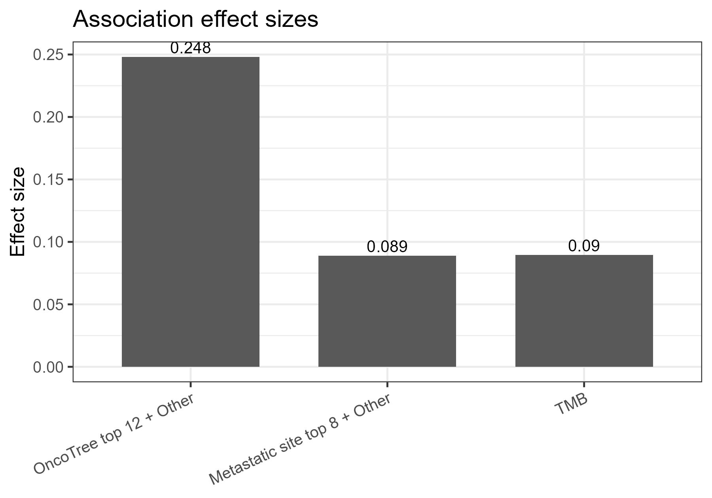
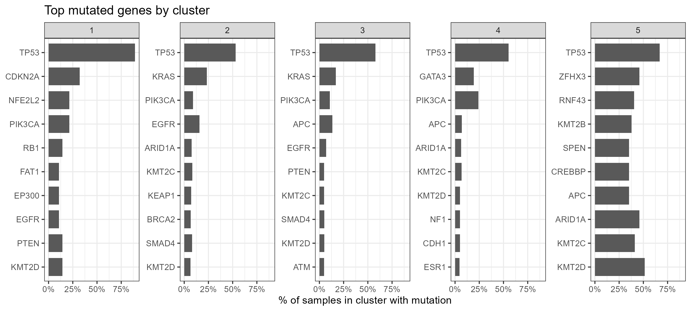
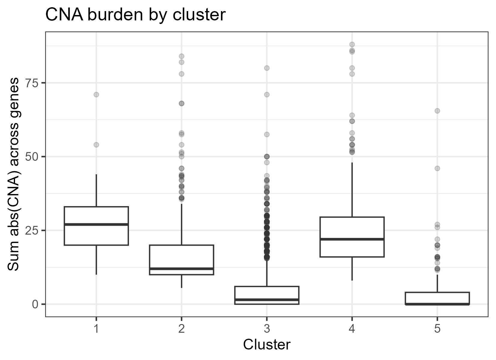

Research Question
Do integrated Mut+CNA+SV abnormality patterns define distinct clusters, and are these clusters associated with clinical variables such as cancer type, metastatic site, tumor mutational burden (TMB), and microsatellite instability (MSI)?
Data and Cohort
This project uses the MSK-CHORD 2024 cohort from cBioPortal DataHub. The analysis integrates four files: clinical sample data, mutation data, CNA data, and structural variant data. The final overlap cohort contains samples present across all required genomic and clinical tables.
Methods
Feature Construction
Mutation features were encoded as binary top-gene indicators. CNA features were summarized from gene-level copy-number profiles. SV features included event counts and major SV classes.
Dimensionality Reduction
Features were standardized and reduced using PCA before clustering to improve stability in a high-dimensional sparse genomic feature space.
Clustering and Testing
K-means clustering was applied in PCA space. Associations with OncoTree cancer type, metastatic site, and TMB were evaluated using chi-square and Kruskal-Wallis tests with effect sizes.
Main Results
- The final clustering solution used K = 5.
- Cluster assignment was associated with OncoTree cancer type, with a moderate effect size.
- Cluster assignment was also associated with metastatic site, but with a smaller effect size.
- TMB differed across clusters, suggesting that the clusters capture clinically relevant mutational burden variation.



Conclusion
Integrated genomic abnormality patterns in MSK-CHORD are clinically meaningful, especially with respect to cancer type and TMB. However, cluster imbalance and cancer-type composition should be considered when interpreting these results. Future work should include robustness checks and within-cancer-type clustering.